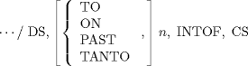

| 5.6. Multiple Intersections | ||
|---|---|---|
 | Chapter 5. Programming a Tool Path |  |
| 5.6. Multiple Intersections | ||
|---|---|---|
| | Chapter 5. Programming a Tool Path | |
The APT processor provides the language for selecting an intersection of possible stopping location from among many possible intersections with the drive and check surfaces. The usual final position is the first one encountered along the direction of travel. With the multiple intersection feature, this one can be ignored and a later valid position selected. The format of the motion command with this feature implemented is as follows:

where n is an integer.
This results in the processor selecting the nth intersection between the drive and check surfaces, along the direction of cutter travel.
Section 14.3 discusses the special meaning that TO, ON, PAST, and TANTO have with regard to choosing an nth intersection. Figure 5.35 shows an example of multiple intersections.
| |  | |
| 5.5. Expanded Tolerance Statement |  | 5.7. Optional Feed Rate Specification |